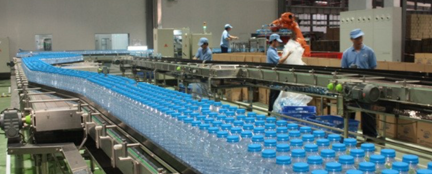
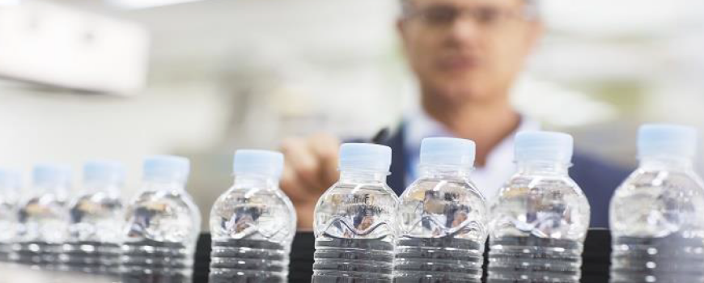
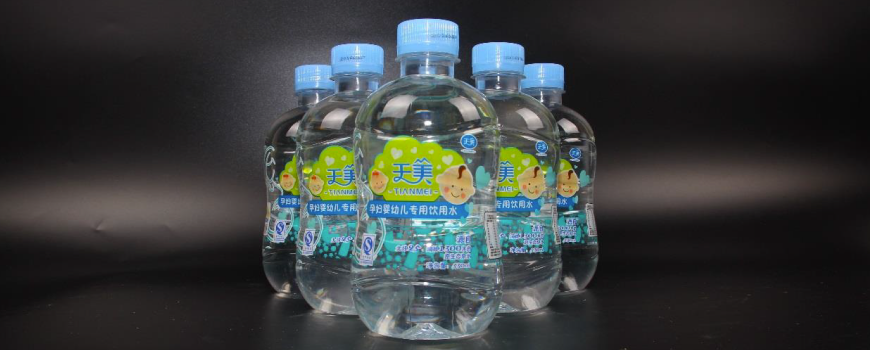

案例
Tianmei Beverage Group Corporation Limited（天美饮品集团有限公司，简称“天美”，ASX代码：TB8）
天美饮品集团有限公司以“打造一流民生企业，服务千家万户健康”为使命，精心研发饮用水产品，力求为广大百姓提供卫生、安全、健康的高品质产品。天美拥有中科院水质专家、教授级工程师领衔的高水平研发团队，在多地探寻开发高质量水源，研制出有自主知识产权、达到世界先进水平的自动化生产线，建立了水源地环境保护和水产品质量监控体系，已开发生产多款“天美”系列饮用水产品，所有产品均在地处北纬25度黃金气候生态带的原始森林自然保护区水源地直接灌装。
HealthTrace把天美从水源地的水源采集到灌装处理，封装品检，分拣运输，终端销售的全过程进行管理溯源：
1.水源地跟踪
通过将水源地的水质检验设备连接入HealthTrace系统，对水源地进行实时跟踪监测，水质出现污染情况及时报警。
2.罐装生产环节
通过将视频监控连入HealthTrace中，对天美自营水产品的罐装全过程进行监督管理，并将瓶装容器的质检报告输入系统中，进行监督，提高天美对罐装生产过程的把控。

3.出场前自检环节
设置自检程序，对所有瓶装水产品进行出厂前的抽样检测，并将检测报告录入系统，对异常产品发出警告。

4.运输环节
监督所有运输车辆的配送时间、路线及收验货确认单，防止有不法商贩用假冒伪劣产品偷换天美的自营水产品，对天美品牌造成影响。
5.流通销售环节
将上述各种环节的信息汇总入HealthTrace，并将统一严格的行业产品标准与天美瓶装水产品信息进行对比，消费者很容易看出哪些指标合格或优于行业标准，凸显出天美水产品优良品质的优势。
